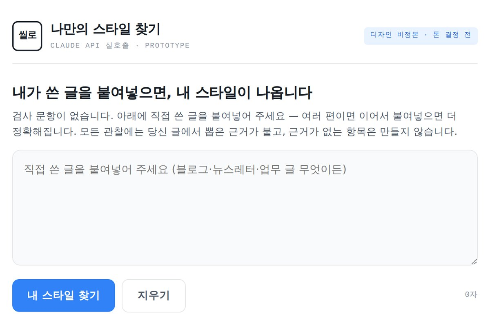
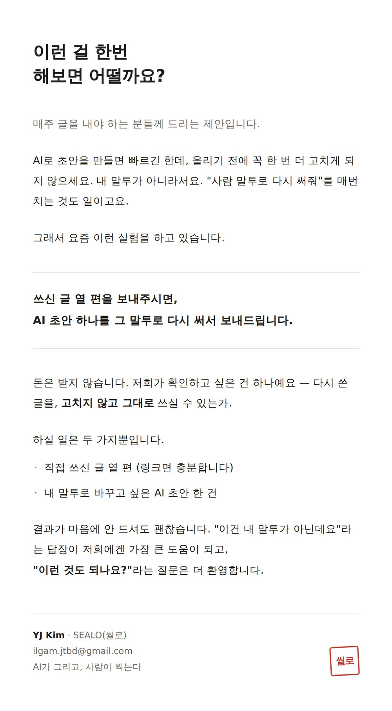

01
진행 중 · 2026.08 ~
기획 · 개발 직접
Sealo(씰로) — AI가 쓴 초안을 내 스타일로 다시 씁니다.
매주 글을 내야 하는 사람들은 AI 초안을 그대로 쓰지 못합니다. 빠르긴 한데 내 말투가 아니라서 올리기 전에 매번 고칩니다. 그래서 직접 쓴 글에서 스타일 규칙을 근거와 함께 뽑아내고, 사람이 확정한 규칙으로 초안을 다시 쓰는 도구를 만들고 있습니다. 슬로건은 "AI가 그리고, 사람이 찍는다"입니다.
근거 없는 규칙은 만들지 않음
확정은 사람이 — 자동 적용 없음
1순위 지표 그대로 올린 비율
개발 중 · 수동 파일럿 단계
직접 만든 것 — 스타일 추출 프로토타입 · 파일럿 제안서


문제
AI로 초안을 만들면 빠르지만, 내 말투가 아니라 결국 다시 씁니다. "사람 말투로 바꿔줘"를 매번 입력하는 것도 반복 비용입니다. 스타일은 이미 있는데 AI가 안 쓰고 있는 셈입니다.
접근
설문이나 검사 문항 없이 직접 쓴 글에서만 스타일을 추출합니다. 모든 관찰에 원문 인용을 붙이고, 근거가 없으면 그 항목은 만들지 않습니다. 규칙은 제안까지만 하고 확정 도장은 사람이 찍습니다.
현재
Claude API를 직접 호출하는 프로토타입을 구현했고, 제품을 크게 만들기 전에 수동 파일럿으로 검증 중입니다. 확인하려는 건 하나 — 고치지 않고 그대로 올렸는가.